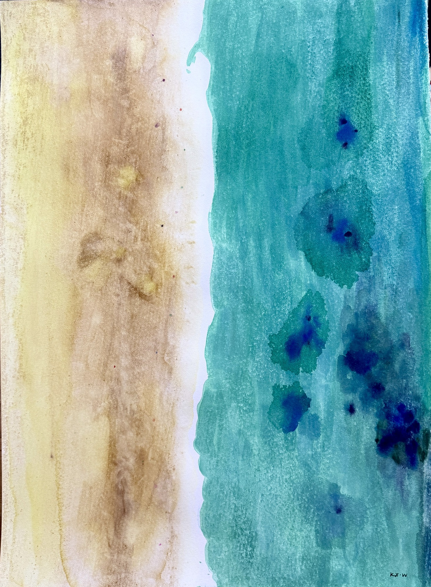

Facing Each Other
对望

- Artwork ID / 作品编号
- KW-W-000017
- Year / 年份
- 2026
- Medium / 媒介
- Watercolor on paper / 纸本水彩
- Dimensions / 尺寸
- 109 × 79 cm (H × W / 高 × 宽)
About the work / 作品介绍
Two distinct fields face one another across a narrow, unstable interval. Neither side is symmetrical or fully defined, yet a relation is established through distance. The work treats separation not as disconnection, but as a condition through which difference, attention and tension become visible.
画面由两个性质不同的色域构成，中间保留着一条狭长而不稳定的间隔。两侧并不对称，也没有明确的主体，却形成了一种彼此感知的关系。距离使差异显现，却并未切断联系。《对望》关注的不是两个具体对象，而是不同存在在各自位置上面对彼此时形成的张力与关联。